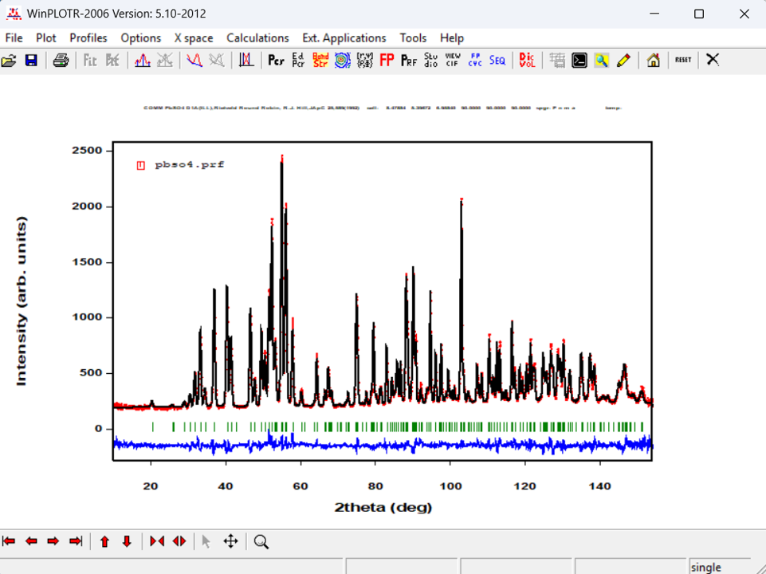
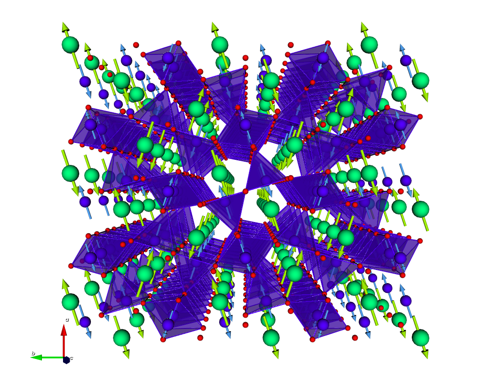
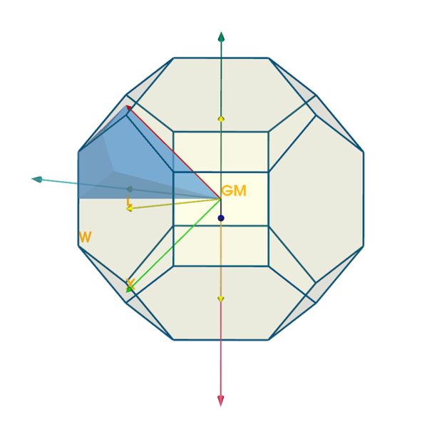

Crystallographic tools for Rietveld, profile matching and integrated intensity refinements
The FullProf Suite is formed by a set of crystallographic programs mainly developed for Rietveld analysis (structure profile refinement) of neutron (constant wavelength, time of flight, nuclear and magnetic scattering) or X-ray powder diffraction data collected at constant or variable step in scattering angle 2θ.
Image gallery

Rietveld analysis

Structure visualization

Symmetry analysis
Main Features
- X-ray diffraction data: laboratory and synchrotron sources.
- One or two wavelengths (eventually with different profile parameters).
- Scattering variables: 2theta (in degrees), TOF (in microseconds), energy (in KeV).
- Background: fixed, refinable points or polynomial coefficients, Fourier filtering.
- Choice of peak shape for each phase: Gaussian, Lorentzian, modified Lorentzian, pseudo-Voigt, Pearson-VII, Thompson-Cox-Hastings (TCH) pseudo-Voigt, numerical, split pseudo-Voigt, convolution of a double exponential with a TCH pseudo-Voigt for TOF.
- Multi-phase (up to 16 phases).
- Preferred orientation: two functions available.
- Absorption correction for different geometries. Micro-absorption for Bragg-Brentano set-up.
- Choice between three weighting scheme: standard least-square, maximum likelihood and unit weights.
- Choice between automatic generation of hkl and/or symmetry operators and file given by user.
- Magnetic structure refinement (crystallographic and spherical representation of the magnetic moment). Two methods: describing the magnetic structure in the magnetic unit cell or making use of the propagation vectors using the crystallographic unit cell. This second method is necessary for incommensurate magnetic structures.
- Automatic generation of reflections for an incommensurate structure with up to 24 propagation vectors. Refinement of propagation vectors components in reciprocal lattice units.
- hkl-dependence of FWHM for strain and size effects.
- hkl-dependence of the position shifts of Bragg reflections for special kinds of defects.
- Profile Matching: the full profile can be adjusted without prior knowledge of the structure (needs only good starting cell parameters and profile parameters).
- Quantitative analysis withour need of structure factor calculations.
- Chemical (distances and angles) and magnetic (magnetic moments) slack constraints. They can be generated automatically by the program.
- The instrumental resolution function (Voigt function) may be supplied in a file. A microstructural analysis is then performed.
- Form factor refinement of complex objects (plastic crystals).
- Structural or magnetic model could be supplied by an external subroutine for special purposes (rigid bodies, polymers, small angle scattering of amphifilic crystals, description of incommensurate structure in real direct space).
- Single crystal data or integrated intensities can be used as observations (alone or in combination with a powder profile).
- Neutron (or X-ray) powder patterns can be mixed with integrated intensities of X-ray (or neutron) for single crystal or powder data.
- Full multi-pattern capabilities. The user may mix several powder diffraction patterns (eventually heterogeneous: X-rays, TOF neutrons, etc.) with total control of the weighting scheme.
- Montecarlo/Simulated Annealing algorithms have been introduced to search the starting parameters of a structural problem using integrated intensity data.